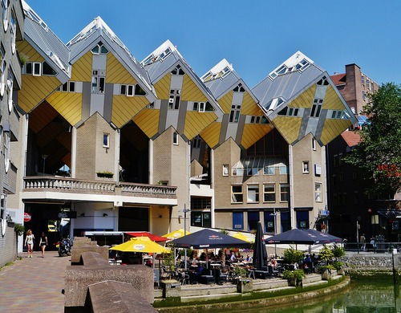
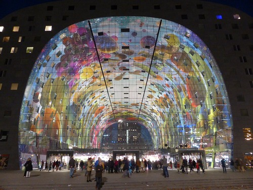

Rotterdam
Kijk-Kubus Museum-house
Architect Piet Blom created a series of avant-garde homes known as "cube houses" that were constructed in the Dutch cities of Helmond and Rotterdam, the idea behind them is "living as an urban roof".
Markthal (Market Hall)
Food, entertainment, housing, and parking are all sustainably combined in the Markthal, a structure where all uses are completely interwoven to celebrate and maximize their complementary potential.
